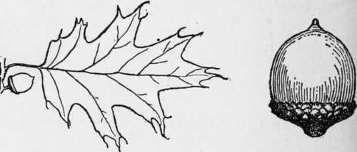
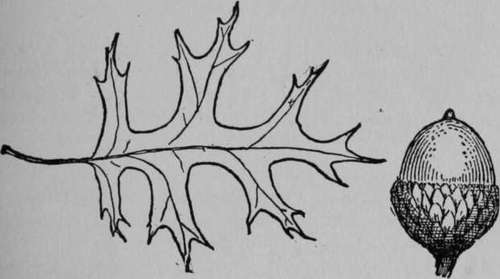

Forestry. Part 3
Description
This section is from the book "The Book Of Woodcraft", by Ernest Thompson Seton. Also available from Amazon: The Book of Woodcraft.
Forestry. Part 3
Blue Beech, Water Or American Hornbeam (Carpinus Caroliniana)
A small tree, 10 to 25, rarely 40, feet high; bark, smooth. Wood hard, close-grained, very strong; much like Ironwood, but lighter. A cubic foot weighs 45 lbs. Leaves 3 to 4 inches long. U. S. east of Missouri River.
White Oak (Quercus Alba)
A grand forest tree; over 100 feet up to 150 feet high. The finest and most valuable of our oaks. The one perfect timber for shipbuilders, farmers and house furnishers. Its wood is pale, strong, tough, fine-grained, durable and heavy. A cubic foot weighs 46 lbs. I found that when green it weighed 68 lbs. to the cubic foot and of course sank in water like a stone. Called white from pale color of bark and wood. Leaves 5 to 9 inches long. Texas to Minn, and easterly.
Yellow Oak, Chestnut Oak Or Chinquapin Scrub Oak (Quercus Muhlenbergii)
A great forest tree; up to 160 feet high; wood as usual, but the heaviest of all, when dry; a cubic foot weighs 54 lbs; when green, it is heavier than water, and sinks at once. It is much like the chestnut oak but its leaves are narrower, more sharply saw-edged and its acorns much smaller, about half the size. Its acorns ripen in one season. Leaves 4 to 6 inches long. La. to Iowa and easterly to Mass.
Red Oak (Quercus Rubra)
A fine forest tree, 70 to 80, or even 140, feet high. Wood reddish brown. Sapwood darker. Hard, strong, coarsegrained, heavy. A cubic foot weighs 41 lbs. It checks, warps, and does not stand for weather or ground work.
The acorn takes two seasons to ripen. Apparently all those oaks whose nuts take two seasons to ripen have wood that soon rots. The low flat shape of the cup is distinctive; in fact it has no cup, it has a saucer; leaves 4 to 8 inches long. Mo. to Minn, and east to Atlantic.
Scarlet Oak (Quercus Coccinea)
Seventy to 80 or even 160 feet high. Scarlet from its spring and autumn foliage color. The leaves are a little like those of the Black Oak, but are frond-like with three or four deep, nearly even, cuts on each side: The acorns of this can be easily matched among those of the Black Oak, but the kernel of the Scarlet is white, that of the Black is yellow; they take two seasons to ripen. Wood much as in Red Oak but weighs 46 lbs. per cubic foot. Leaves 4 to 8 inches long. Mass. to Ga. & Iowa.
Black Oak, Golden Oak Or Quercitron (Quercus Velutina)
Seventy to 80 or even 150 feet high. The outer bark is very rough, bumpy and blackish; inner bark yellow. This yields a yellow dye called quercitron. The leaf is of the Scarlet Oak style, but has uneven cuts and usually a large solid area in the outer half. The wood is hard, coarsegrained, checks, and does not stand for weather or ground work. A cubic foot weighs 44 lbs. Wis. to Maine and south to Gulf.
Pin Oak Or Swamp Oak (Quercus Palustris)
Fifty to 70 or even 120 feet high, in swampy land. Wood hard, coarse-grained, very strong and tough. Will not stand exposure next to ground. A cubic foot weighs 34 lbs. Its acorns take two seasons to ripen. Leaves 4 to 6 inches long. In moist woods and along swamp edges Mass. to Iowa and Ark.
Beech (Fagus Grandifolia)
In all North America there is but one species of beech. It is a noble forest tree, 70 to 80, and occasionally 120 feet high; readily distinguished by its unfurrowed ashy gray bark. Wood hard, strong, tough, close-grained, pale, heavy. Leaves 3 to 4 inches long. A cubic foot weighs 43 lbs. Wis. to Nova Scotia and south to Gulf.
A noble tree, 60 to 80 or even 100 feet high. A cubic foot of the wood weighs 28 lbs. Leaves 6 to 8 inches long. Mass. to Ind. and Miss.
White Elm, Water Or Swamp Elm (Ulmus Americana)
A tall splendid forest tree; commonly 100, occasionally 120 feet. Wood reddish brown; hard, strong, tough, very hard to split. A cubic foot weighs 41 lbs. Soon rots near the ground. Leaves 2 to 5 inches long. Man. to Nova Scotia and south to Gulf.
Slippery Elm, Moose Or Red Elm (Ulmus Fulva)
Smaller than White Elm, maximum height about 70 feet. Wood dark, reddish, hard, close, tough, strong; durable next the ground; heavy; a cubic foot weighs 43 lbs. Its leaves are larger and rougher than those of the former.
Chestnut (Castanea Dentata)
Four to 8 inches long, and its buds are hairy, not smooth. Maine to Minn, and south to Gulf.
Continue to:
Tags
bookdome.com, books, online, free, old, antique, new, read, browse, download